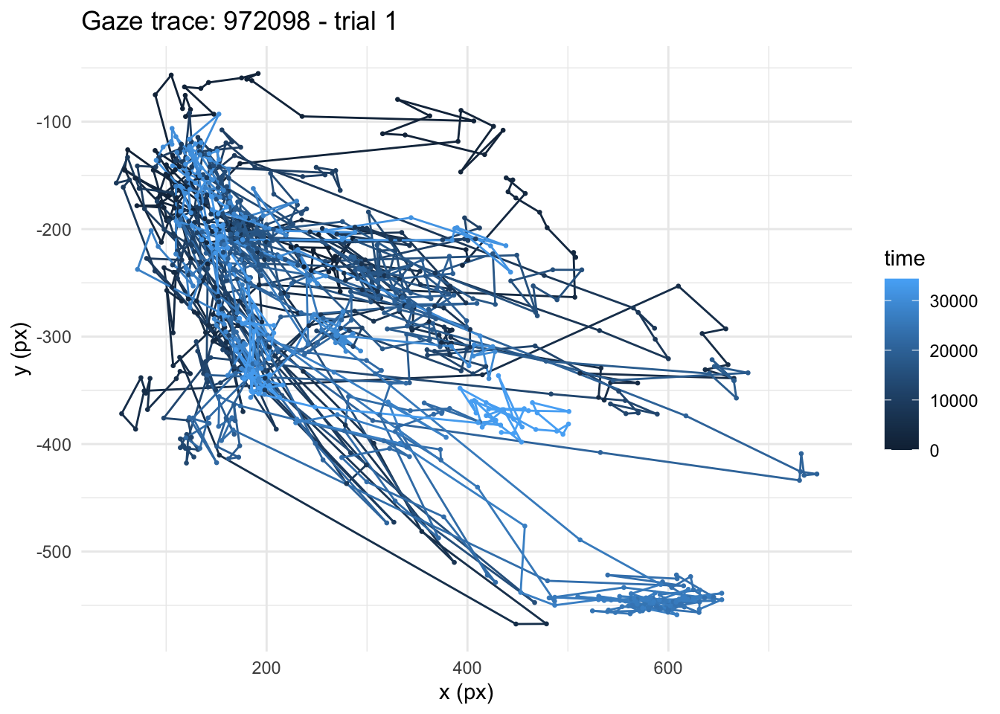

options(stringsAsFactors = FALSE)
options("scipen" = 100, "digits" = 10)
library(webgazeR)
library(dplyr)
library(ggplot2)
library(knitr)Using webgazeR with Labvanced
Labvanced is another platform (alongside Gorilla, jsPsych, and PsychoPy) that webgazeR can read webcam eye-tracking data from via merge_webcam_files(kind = "labvanced"). This vignette walks through what Labvanced’s exports look like, how to point merge_webcam_files at them, and what it does under the hood so the output can be trusted.
For a look at webcam-based eye tracking’s validity for a genuinely demanding paradigm, see Serrano-Carot, Angele, Xu, & Vasilev (2025), Webcams can be used to study eye movements during reading (https://doi.org/10.31234/osf.io/bzt2h_v1).
Packages
What Labvanced exports
For each participant, Labvanced’s dashboard lets you download up to three relevant files:
- A timeseries export (e.g.
timeseries.csv): one row per logged event (gaze samples, drift corrections, calibration errors, etc.), in long format. Required. - A trials export (e.g.
trials.csv): one row per trial, with trial-level metadata (condition, accuracy, timing, etc.). Optional, but recommended. - A sessions export (e.g.
sessions.csv): one row per recording session, with session-level metadata – including each participant’s screen and browser-window size in pixels. Optional;merge_webcam_filesonly pulls in the screen/window size columns from it (not the browser/timing metadata that makes up the rest of the file).
We assume each participant’s files live together in their own folder, e.g.:
data-raw/labvanced/
├── sub1/
│ ├── timeseries.csv
│ ├── trials.csv
│ └── sessions.csv
└── sub2/
├── timeseries.csv
└── trials.csvThis is the natural layout if you download each participant’s data separately from Labvanced, and it’s how merge_webcam_files figures out which timeseries file belongs with which trials file. A sessions file is different: it’s matched to participants by its Rec_Session_Id column, not by which folder it’s sitting in, so it doesn’t need to live alongside the participant it describes at all – more on that below. If no sessions file covers a given participant, that participant’s rows simply get NA for screen/window size rather than an error.
Merging
Point merge_webcam_files at every file across every participant’s folder – list.files(..., recursive = TRUE) is the easiest way to do that – and set kind = "labvanced". You don’t need to separate out timeseries files from trials/sessions files yourself, or worry about the order.
labvanced_files <- list.files(
"data-raw/labvanced",
pattern = "\\.csv$",
recursive = TRUE,
full.names = TRUE
)
edat_lab <- merge_webcam_files(file_paths = labvanced_files, kind = "labvanced")webgazeR ships this example already merged as labvanced_eyedata (from two real participants’ Labvanced exports), so the rest of this vignette uses that directly rather than needing the raw files on disk:
edat_lab <- webgazeR::labvanced_eyedataThe result is a single long-format tibble with the same subject, trial, time, x, y columns you’d get from Gorilla or jsPsych, plus confidence, whatever trial-level metadata was in the trials export (condition, block, accuracy, etc.), and screen/window size where a sessions export was available:
| subject | trial | time | x | y | confidence | task_name | condition_id | screen_width_in_pixels | screen_height_in_pixels |
|---|---|---|---|---|---|---|---|---|---|
| 972098 | block_1_sentence_1 | 0.00000000 | 229.8041105 | 215.9724019 | 0.7671327219 | sentence | 1 | NA | NA |
| 972098 | block_1_sentence_1 | 32.00000000 | 237.2050762 | 235.0132663 | 0.7443319452 | sentence | 1 | NA | NA |
| 972098 | block_1_sentence_1 | 64.19995117 | 224.2113352 | 216.7597242 | 0.6928625231 | sentence | 1 | NA | NA |
| 972098 | block_1_sentence_1 | 112.30004883 | 261.8036628 | 217.5284788 | 0.7696027604 | sentence | 1 | NA | NA |
| 972098 | block_1_sentence_1 | 144.00000000 | 251.7666101 | 205.0210364 | 0.8158088375 | sentence | 1 | NA | NA |
| 972098 | block_1_sentence_1 | 176.09985352 | 267.2854066 | 229.3384362 | 0.7541744210 | sentence | 1 | NA | NA |
dim(edat_lab)[1] 75958 31n_distinct(edat_lab$subject)[1] 2What’s happening under the hood
A few things about Labvanced’s export format make it different enough from Gorilla/jsPsych/PsychoPy that they’re worth understanding, even though you don’t have to handle any of them yourself.
NoteGaze samples are packed into unnamed trailing columns
Labvanced’s timeseries CSV only names columns through value, but a gaze_data row actually carries four values: pixel x, pixel y, a high-precision sample timestamp, and a confidence score – the last three arrive as unnamed columns tacked onto the end of the line. merge_webcam_files always parses these out into x, y, and confidence, and uses the high-precision timestamp (not the coarser logging timestamp column) to build time.
Some gaze_data events are logged with no sample attached yet (e.g. right as tracking starts up for a trial) – those rows are dropped entirely rather than kept as NA, so every row in the output has real data.
Note
time starts at 0 at the first real sample
Labvanced’s raw sample timestamp is an absolute Unix epoch value in milliseconds (confirmed in Labvanced’s own docs: it’s the raw camera-capture timestamp, not trial-relative on its own). merge_webcam_files re-expresses it as elapsed time from 0 at each trial’s first actual gaze sample, matching how Gorilla and jsPsych report time.
This deliberately doesn’t anchor to the trials export’s trial_start instead. Trial_Start isn’t an official Labvanced system variable – it’s absent from Labvanced’s own system-variables documentation – so a trial_start column is whatever a given study’s own condition table happened to define it as, not something guaranteed to exist or mean the same thing from one Labvanced study to the next. Anchoring to the first gaze sample only ever needs the timeseries export itself, so it works the same way for every Labvanced study, with or without a trials file.
Note
trial combines the block, task, and trial number
This is the one genuinely tricky part of Labvanced’s format, so it’s worth spelling out. Labvanced experiments are organized into a session > block > task > trial hierarchy: a session contains blocks, a block groups tasks together (and a task can be reused across more than one block), and each task has its own trial counter that starts back at 1. That means Trial_Nr == 1 can refer to several completely unrelated trials if your experiment has multiple tasks (confirmed here: a sentence task and a later sentence_DC task each restart at Trial_Nr = 1) – and Trial_Id, which might look like a more specific identifier, turns out to be a per-task randomized item-order id rather than a stable trial identity, so it doesn’t solve this either.
Rather than bet on exactly which level of that hierarchy resets the trial counter – which may differ across study designs – merge_webcam_files defaults trial to "<Block_Name>_<Task_Name>_<Trial_Nr>" (e.g. "block_1_sentence_1"), folding in every level that’s actually present in the file, and joins trial metadata on the recording session, block, task, and trial number together. That guarantees a trial value always refers to one specific trial, never an unrelated one from another block, task, recording session, or participant.
If your analysis only cares about one task – often the case, since a task like wait may not even carry gaze data, and a downstream sentence_DC task may be a separate analysis entirely – pass task to sidestep the composite id and get a plain numeral trial instead:
edat_sentence <- merge_webcam_files(
file_paths = labvanced_files,
kind = "labvanced",
task = "sentence"
)edat_sentence <- webgazeR::labvanced_eyedata_sentence
edat_sentence %>%
distinct(trial) %>%
arrange(as.numeric(trial)) %>%
head() %>%
kable()| trial |
|---|
| 1 |
| 2 |
| 3 |
| 4 |
| 5 |
| 6 |
merge_webcam_files checks that Trial_Nr is actually unique within that task before doing this (i.e. that the task doesn’t span more than one block) – if it isn’t, you’ll get an informative error rather than silently duplicated trial ids.
If your own trials export happens to include a variable that’s already a clean, session-wide running counter (in the data used for this vignette, a trial_number column happens to number sentence trials 1-60 and sentence_DC trials 61-100 continuously), it comes through untouched as ordinary retained metadata – edat_lab$trial_number – so you can sort or group by it yourself if you trust it for your study. It isn’t used to build trial by default, since it’s specific to how a given study’s condition table was set up rather than something guaranteed to exist in every Labvanced export.
NoteEach participant’s files are combined before merging across participants
If you pass in every participant’s files at once, merge_webcam_files groups them by the folder they live in, fully processes one participant’s timeseries + trials together, and only then stacks the participants’ results. Trial metadata can never leak from one participant’s rows to another’s this way, even when multiple participants happen to share Trial_Nr/Trial_Id values (which, per above, they typically will).
NoteScreen size comes from the sessions export, matched by session id
Unlike the trials export, a sessions export is matched to participants by its Rec_Session_Id column rather than by folder – so it’s fine if it’s a single file covering the whole study, one file per participant sitting anywhere, or (as in the data used for this vignette) placed in a folder that isn’t even the participant’s own:
edat_lab %>%
distinct(subject, screen_width_in_pixels, screen_height_in_pixels) %>%
kable()| subject | screen_width_in_pixels | screen_height_in_pixels |
|---|---|---|
| 972098 | NA | NA |
| 972123 | 1920 | 1080 |
Only the screen/window size columns are pulled in from a sessions export, not the rest of the file (browser version, timing statistics, crowdsourcing ids, etc.), so it can’t reintroduce unrelated columns or collide with anything already in the output.
A quick look at the raw gaze data
Once merged, Labvanced data plugs into the rest of the webgazeR pipeline the same way Gorilla or jsPsych data would. From here on we’ll use edat_sentence (the single-task version) since its trial ids are the simple numerals we’ll want for filtering/sorting. Since Labvanced coordinates are raw pixel positions rather than normalized 0-1 coordinates like Gorilla’s, a simple trajectory plot is a useful sanity check before doing anything else (e.g. before assigning AOIs, which needs your own screen/zone coordinates):
one_trial <- edat_sentence %>%
filter(subject == subject[1], trial == "1")
ggplot(one_trial, aes(x = x, y = -y, color = time)) +
geom_path() +
geom_point(size = 0.5) +
labs(
title = paste("Gaze trace:", one_trial$subject[1], "- trial", one_trial$trial[1]),
x = "x (px)", y = "y (px)"
) +
theme_minimal()
Next steps
From here, everything in the main webgazeR vignette applies the same way it would to Gorilla data – AOI assignment (assign_aoi()), downsampling/upsampling (downsample_gaze(), upsample_gaze()), smoothing and interpolation (smooth_gaze(), interpolate_gaze()), and plotting (plot_IA_proportions()) are all platform-agnostic once your data is in this standardized subject/trial/time/x/y form. The one thing to keep in mind is that Labvanced’s x/y are raw pixel coordinates, not Gorilla’s normalized 0-1 coordinates, so any AOI boundaries you define need to be in the same pixel space – or normalize x/y yourself, e.g. x / screen_width_in_pixels, using the screen_width_in_pixels/screen_height_in_pixels columns from the sessions export (see above) if you supplied one.